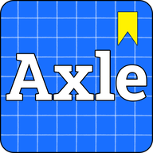

Axle
Personvernerklæring · Privacy policy · Sist oppdatert / last updated: 2026-10-15 · Vilkår for bruk / Terms of use
Norsk
Kort fortalt: Appen har ingen reklame, selger ingen data og sporer deg ikke på tvers av nettsteder. Konto er valgfritt. Bruksstatistikk sendes bare hvis du sier ja, og den inneholder aldri svarene dine eller tekst du skriver.
Bruksstatistikk (bare hvis du sier ja). Første gang du har brukt appen litt, spør vi om du vil dele bruksstatistikk. Den er av til du svarer ja. Sier du ja, sender appen små hendelser om hvilke skjermer, fag, enheter og øvinger som åpnes, hvor mange oppgaver som løses og hvor mange som var riktige, samt språk og plattform (nett, iPhone, Android, Mac/Windows). For å skille nettlesere uten konto lagres en tilfeldig enhets-id lokalt; er du logget inn, knyttes hendelsene til kontoen din. Vi sender aldri svarene du skriver, navn, e-post eller annen fritekst. Dataene lagres hos Supabase i EU (Frankfurt) og brukes bare til å forbedre Axle. En planlagt jobb sletter hver natt alle hendelser som er eldre enn 6 måneder, og hendelser knyttet til en konto slettes når kontoen slettes. Du kan slå det av når som helst under Innstillinger → «Del bruksstatistikk».
Fremgang (XP, dager på rad, fullførte nivåer, innstillinger) lagres lokalt på enheten din. Uten konto sendes den ikke til oss.
Konto (valgfritt). Logger du inn, lagrer vi e-postadressen din og en kopi av fremgangen, slik at du får samme fremgang på alle enhetene dine. Dataene lagres hos Supabase i EU (Frankfurt). E-posten med innloggingskoden sendes via tjenesten Resend. Vi bruker dataene bare til innlogging og synkronisering, deler dem ikke med andre og bruker dem ikke til reklame. Du kan slette kontoen under Innstillinger → Slett konto. Da slettes e-postadressen og fremgangen hos oss for godt.
Venner (valgfritt). Bruker du Venner, lagrer vi et visningsnavn du velger selv og en venne-kode. Vennene dine ser navnet ditt, XP, rekke, kroner, antall fullførte nivåer, hvilket fag du øver på og når du sist var aktiv. Dere blir bare venner når en av dere legger inn den andres kode, og du kan fjerne venner når som helst. Navnet, koden og vennelisten slettes sammen med kontoen.
Feilrapporter og tilbakemeldinger sendes bare når du selv trykker «Send». Rapporten inneholder det du skriver, hvilken oppgave det gjelder, svaret ditt, språk, appversjon og plattform. Oppgir du e-post, brukes den bare til å svare deg. Rapportene sendes via tjenesten Web3Forms (eller e-postappen din) til utviklerens e-post og slettes når de er behandlet.
Brukernavn, profilbilde og forespørsler. Velger du et brukernavn, kan andre innloggede brukere finne deg i søk og sende deg en venneforespørsel. Du blir bare venn med noen når du godtar. Et profilbilde lagres som et lite bilde (160×160) og vises bare for vennene dine og i søk.
Rapportering og blokkering. Du kan rapportere navn, profilbilder og oppførsel, og blokkere brukere. Rapporter lagres med hvem som rapporterte, slik at vi kan behandle dem, og slettes når saken er avsluttet. Navn og bilder som rapporteres av flere, skjules automatisk. Stygge ord i navn stoppes av et filter. Misbruk kan også meldes til support@axle.no.
Profil og merker. Andre innloggede brukere som åpner profilen din, ser navnet, brukernavnet, avataren eller profilbildet ditt og merkene du har valgt å vise (du kan skjule alle eller enkeltmerker på Merker-siden). Statistikken din vises som standard bare for venner og folk du er i gruppe med; du kan velge å vise den for alle under Venner.
Venneliste og grupper (valgfritt). Slår du på «Vis vennelista mi for vennene mine», kan vennene dine se hvem du er venn med, og dere kan få forslag om felles venner. Ingen andre ser lista, og den er av som standard. Er du med i en gruppe, ser de andre medlemmene visningsnavnet ditt, avatar eller profilbilde og tallene til topplista (XP, rekke, kroner). Du kan forlate en gruppe når som helst. Gruppenavn kan rapporteres.
Elevprofiler fra læreren
En lærer kan lage innlogging til elevene sine uten e-post (opptil 200 elever per lærer). Denne delen er for lærere, elever og foresatte.
Slik får eleven innlogging. Læreren skriver inn navnene (gjerne bare fornavn). Hver elev får et brukernavn som «ola.k7mq» og et engangspassord som læreren ser én gang og gir til eleven. Læreren kan også slå på en klassekode eller lenke; da lager eleven selv brukernavn og passord. Koden gir bare lov til å bli med i klassen. Den gir ikke tilgang til lærerens konto eller andre elevers data, og læreren kan lage en ny kode eller slå den av.
Dette lagres om eleven:
- brukernavn, navnet som er skrevet inn, klasse og hvilken lærer profilen hører til
- passordet, bare som en hash hos innloggingstjenesten (Supabase Auth) – ikke i klartekst; verken læreren eller vi kan se det
- fremgangen i appen: XP per dag, dager på rad, fullførte nivåer, hvilke oppgaver som er besvart feil, egne kort og innstillinger
- resultater fra lekser, quiz og konkurranser: navn, poeng, antall riktige og tidspunkt
- tidspunkter: når fremgangen sist ble lagret, og innloggingstjenestens logg over innlogginger
Elevprofiler har ikke e-post, profilbilde, venner, grupper, meldinger eller offentlig profil, og bruksstatistikk sendes ikke.
Hvorfor. For at eleven kan logge inn og ha samme fremgang på ulike enheter, og for at læreren kan følge opp hver elev.
Hvem ser hva. Eleven ser sin egen fremgang. Læreren ser bare sine egne elever: navn, brukernavn, XP siste 7 dager, faget eleven jobber med, når fremgangen sist ble lagret, og leksesvar. Læreren ser ikke resten av fremgangen og aldri passordet. Andre elever ser ikke elevens fremgang. Unntak: på topplisten til en lekse, quiz eller konkurranse vises navn og poeng for topp 30 til alle som er logget inn og har lenken, og i en live-quiz ser deltakerne hverandres navn og poeng. Utvikleren av Axle har teknisk tilgang til databasen.
Glemt passord. Eleven spør læreren, som lager et nytt engangspassord. Det gamle slutter å virke og kan ikke vises.
Delte enheter. Når en elev logger ut, lagres fremgangen i skyen og slettes fra enheten. Fremgang som lå på enheten før eleven logget inn, flyttes ikke inn i elevprofilen.
Sletting. Læreren kan fjerne en elev eller slette en klasse; da slettes elevprofilen, fremgangen og resultatene. Sletter læreren sin egen konto, slettes også klassene og elevprofilene i dem. Resultater fra lekser og quiz som er eldre enn 90 dager, slettes fortløpende når nye resultater sendes inn. Ellers slettes ingenting automatisk ennå: profilene ligger til læreren sletter dem. Hvor lenge innloggingstjenestens logger og sikkerhetskopier beholdes, er ikke avklart ennå.
Læreren har en vanlig konto med e-post. I tillegg lagres klassenavn, klassekode og hvilke elever som hører til læreren.
Hvor. Dataene lagres hos Supabase i EU (Frankfurt), som for andre kontoer. Appen lastes fra GitHub Pages.
For skolen. Skal skolen bruke elevprofiler, bør læreren avklare det med skoleledelsen først. Se vurderingsgrunnlag for skoler.
Spørsmål. Om hvorfor klassen bruker Axle: spør læreren eller skolen. Om hvordan Axle behandler opplysningene: support@axle.no.
Fellesskapskurs (valgfritt). Kurs du lager, lagres i Supabase sammen med visningsnavnet ditt. Publiserte kurs kan finnes og spilles av alle innloggede brukere, og de kan likes og rapporteres. Du kan endre eller slette kursene dine når som helst, og de slettes sammen med kontoen. Kurs som rapporteres av flere, skjules automatisk.
Påminnelser. I appen planlegges de lokalt på telefonen. I nettleseren lagrer vi en påmeldings-adresse fra nettleserens push-tjeneste, klokkeslett, tidssone og språk, slik at serveren kan sende påminnelsen. Slår du av påminnelser, slettes dette.
Meldinger (valgfritt). Sender du meldinger til venner eller i grupper, lagres meldingen, avsender, mottaker eller gruppe og tidspunktet hos Supabase i EU. Bare du og mottakeren, eller medlemmene i gruppen, kan lese meldingene. Meldingene dine slettes når du sletter kontoen.
Kodelab og førerkort. Python-koden du skriver i kodelaben, kjøres lokalt på enheten din og sendes ikke til oss. Det samme gjelder svarene dine i førerkortøvingen, som lagres som vanlig fremgang.
Du kan når som helst slette all fremgang under Innstillinger, eller slette appen. Spørsmål om personvern kan sendes via «Send tilbakemelding» eller til support@axle.no.
Kontakt: support@axle.no
English
In short: The app has no ads, sells no data and does not track you across websites. An account is optional. Usage statistics are only sent if you say yes, and they never contain your answers or text you write.
Usage statistics (only if you say yes). Once you have used the app a little, we ask whether you want to share usage statistics. It is off until you say yes. If you do, the app sends small events about which screens, courses, units and exercises are opened, how many problems are solved and how many were correct, plus language and platform (web, iPhone, Android, Mac/Windows). To tell browsers without an account apart, a random device id is stored locally; if you are logged in, the events are linked to your account. We never send the answers you type, your name, email or other free text. The data is stored with Supabase in the EU (Frankfurt) and used only to improve Axle. A scheduled job deletes all events older than 6 months every night, and events linked to an account are deleted when the account is deleted. You can turn it off at any time under Settings → "Share usage statistics".
Progress (XP, streak, completed levels, settings) is stored locally on your device. Without an account it is not sent to us.
Account (optional). If you log in, we store your email address and a copy of your progress so you get the same progress on all your devices. The data is stored with Supabase in the EU (Frankfurt). The email with your login code is sent through the Resend service. We use the data only for login and syncing, do not share it and do not use it for advertising. You can delete your account under Settings → Delete account, which permanently deletes your email address and progress from our systems.
Friends (optional). If you use Friends, we store a display name you choose and a friend code. Your friends see your name, XP, streak, crowns, number of completed levels, the course you are practising and when you were last active. You only become friends when one of you enters the other's code, and you can remove friends at any time. Your name, code and friend list are deleted together with your account.
Error reports and feedback are sent only when you tap “Send”. A report contains what you write, which question it concerns, your answer, language, app version and platform. If you give an email address, it is used only to reply to you. Reports are delivered through the Web3Forms service (or your own email app) to the developer's email and deleted once handled.
Username, profile photo and requests. If you choose a username, other logged-in users can find you in search and send you a friend request. You only become friends with someone when you accept. A profile photo is stored as a small image (160×160) and shown only to your friends and in search.
Profile and badges. Other logged-in users who open your profile see your name, username, avatar or profile photo and the badges you have chosen to show (you can hide all or single badges on the Badges page). By default your stats are only shown to friends and people you share a group with; you can choose to show them to everyone under Friends.
Friend list and groups (optional). If you turn on “Show my friend list to my friends”, your friends can see who you are friends with, and you may get suggestions for mutual friends. Nobody else can see the list, and it is off by default. If you are in a group, the other members see your display name, avatar or profile photo and the numbers on the leaderboard (XP, streak, crowns). You can leave a group at any time. Group names can be reported.
Reporting and blocking. You can report names, profile photos and behaviour, and block users. Reports are stored with who reported them so we can handle them, and are deleted when the case is closed. Names and photos reported by several people are hidden automatically. Offensive words in names are stopped by a filter. Abuse can also be reported to support@axle.no.
Student profiles from a teacher
A teacher can create logins for their students without email (up to 200 students per teacher). This part is for teachers, students and parents.
How a student gets a login. The teacher types in the names (preferably first names only). Each student gets a username like “ola.k7mq” and a one-time password that the teacher sees once and gives to the student. The teacher can also turn on a class code or link; the student then chooses a username and password. The code only lets someone join the class. It gives no access to the teacher's account or other students' data, and the teacher can create a new code or turn it off.
What is stored about the student:
- username, the name that was entered, class and which teacher the profile belongs to
- the password, only as a hash in the sign-in service (Supabase Auth) – not in plain text; neither the teacher nor we can see it
- progress in the app: XP per day, days in a row, completed levels, which questions were answered wrongly, own cards and settings
- results from homework, quizzes and contests: name, points, number correct and time
- times: when the progress was last saved, and the sign-in service's log of sign-ins
Student profiles have no email, profile photo, friends, groups, messages or public profile, and no usage statistics are sent.
Why. So the student can log in and keep the same progress on different devices, and so the teacher can follow up each student.
Who sees what. The student sees their own progress. The teacher sees only their own students: name, username, XP for the last 7 days, the subject the student is working on, when the progress was last saved, and homework answers. The teacher does not see the rest of the progress and never the password. Other students do not see a student's progress. Exception: the leaderboard of a homework, quiz or contest shows the name and points of the top 30 to everyone who is logged in and has the link, and in a live quiz the participants see each other's names and points. The developer of Axle has technical access to the database.
Forgotten password. The student asks the teacher, who creates a new one-time password. The old one stops working and cannot be shown.
Shared devices. When a student logs out, the progress is saved in the cloud and deleted from the device. Progress that was on the device before the student logged in is not moved into the student profile.
Deletion. The teacher can remove a student or delete a class; the student profile, progress and results are then deleted. If the teacher deletes their own account, the classes and the student profiles in them are deleted too. Homework and quiz results older than 90 days are deleted as new results are submitted. Nothing else is deleted automatically yet: profiles stay until the teacher deletes them. How long the sign-in service's logs and backups are kept has not been clarified yet.
The teacher has a normal account with email. In addition, class names, class codes and which students belong to the teacher are stored.
Where. The data is stored with Supabase in the EU (Frankfurt), as for other accounts. The app is loaded from GitHub Pages.
For the school. If a school wants to use student profiles, the teacher should clarify this with the school management first. See the assessment basis for schools (in Norwegian).
Questions. About why the class uses Axle: ask the teacher or the school. About how Axle processes the data: support@axle.no.
Community courses (optional). Courses you create are stored in Supabase together with your display name. Published courses can be found and played by all logged-in users, and they can be liked and reported. You can edit or delete your courses at any time, and they are deleted together with your account. Courses reported by several people are hidden automatically.
Reminders. In the app they are scheduled locally on your phone. In the browser we store a subscription address from the browser's push service, the time, time zone and language so the server can send the reminder. Turning reminders off deletes this.
Messages (optional). If you send messages to friends or in groups, we store the message, sender, recipient or group and the time with Supabase in the EU. Only you and the recipient, or the members of the group, can read the messages. Your messages are deleted when you delete your account.
Code lab and driving licence. Python code you write in the code lab runs locally on your device and is not sent to us. The same applies to your answers in the driving licence practice, which are stored as normal progress.
You can delete all progress at any time under Settings, or delete the app. Privacy questions can be sent through “Send feedback” or to support@axle.no.
Contact: support@axle.no